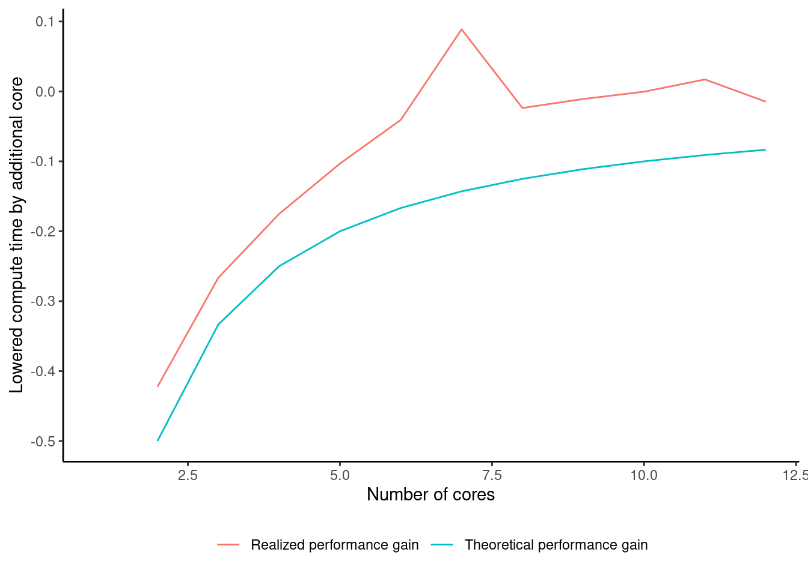

Sometimes we come across problems that are computationally hard. The point of this lecture is to provide you with some techniques for speeding up your scripts. This will however just be an cursory introduction to speeding up programs. The focus here is fairly simple techniques that might be enough for many, but certainly not all, use cases.
9.1 A time consuming problem
To showcase the need for speed we need a time consuming script. We’ll use assignment 3 from the home exam in Ban400 Fall 2021. In this case, we studied a fictitious Tesla car dealership, where customers could pay for cars using Bitcoin (BTC). Customers would lock in the price (in BTC) when signing a contract, but would only pay when the car arrived a few days later. The dealership pays a fixed amount in Norwegian Kroner for each car. Given that the BTC-exchange rate is volatile, this scheme exposes the card dealership to currency risk, where the risk is increasing with a longer delay between contract agreements and payments (lead_time).
Assuming the car dealership:
Has an initial equity of 10
Sells one car every day
Retains all accumulated profits
…will the dealership go bankrupt?
The question should be answered separately for different lead times, and with different potential start-dates for the dealership.
You can find the data set with NOK/BTC exhange rates here: parallel_data.Rdata
library(tidyverse)
── Attaching core tidyverse packages ──────────────────────── tidyverse 2.0.0 ──
✔ dplyr 1.1.4 ✔ readr 2.1.5
✔ forcats 1.0.0 ✔ stringr 1.5.1
✔ ggplot2 3.5.1 ✔ tibble 3.2.1
✔ lubridate 1.9.3 ✔ tidyr 1.3.1
✔ purrr 1.0.2
── Conflicts ────────────────────────────────────────── tidyverse_conflicts() ──
✖ dplyr::filter() masks stats::filter()
✖ dplyr::lag() masks stats::lag()
ℹ Use the conflicted package (<http://conflicted.r-lib.org/>) to force all conflicts to become errors
The solution proposal presented two functions to help solve the problem. calcProfits calculates the daily profits in the data frame, given a data frame, sales price, car cost and lead days. test_neg_equity tests if a specific combination of lead_days and startdates would ever lead to a negative equity.
Before we run the function, lets use some functionality for storing how long time it takes to complete the calculation. Let’s use the tictoc-library:
library(tictoc)# We can use tictoc to time a function..:tic()Sys.sleep(1)toc()
1.008 sec elapsed
Tictoc can also store to logs, so we can make comparisons across experiments. However, the log is stored in an awkward format, so let’s make a function for printing out results in a data frame:
Finally, we make a result data frame with three columns: date, lead_days and neg_eq, where we want to fill in the values of neg_eq. With the combinations below we need to apply the test_neg_equity-function 7305 times. On my machine this takes around a minute. If we wanted to test all the lead days from 1 to 60 we would get almost 90000 function calls, and I would expect the calculations would take 12 times longer.
Waiting a minute is not very long, but is tedious if we need to do this computation often. And sometimes there are problems that simply takes a long time to compute.
9.2 Speeding up a program
There are several methods we can apply to speed up a program.
We can find better ways of solving the problem. Sometimes we can reformulate the problem, use analytical results such that we can get the same answer with less effort.
Use a profiler to understand where the code is spending time, and figure out which parts we should try to make faster. See e.g. https://rstudio.github.io/profvis/
…or: maybe we can use more hardware to solve the problem faster.
In the following, we will try to speed up the program by using more hardware.
9.3 Resources on your computer
Your computer has a central processing unit - also known as a CPU or a simply a processor. This is the unit that does the calculations on your laptop. Modern CPU’s consist of several cores, where each of the cores can do computations in parallell with the others. Below is a picture of the activity on my CPU. Not much happening, but 12 so called “logical cores”. In reality, this CPU only has six cores, but through a technology called hyperthreading each core can process two sets of instructions at the same time. This doubles the amount to six. If you have a Windows machine, you can see your processor activity by pressing CTRL+SHIFT+ESC (Mac users see here). Your computer may have a different number of cores.
Processor use example
9.4Embarrassingly parallel problems
Sometimes, a problem might have to be solve in sequence. Logically, that is how our scripts work: the program starts at the beginning and work its’ way to the end. However, sometimes parts of our code may be such that we can break it up into pieces that can be solved independently of each other. An example of this is the problem below. Here we’re looping through the rows of df_res, and the calculation done at one step doesn’t have any dependence on any of the other steps. If we can break the program up in such parts, we call the problem embarrasingly parallel.
An example of a calculation that is at least not immediately embarrassingly parallel is a cumulative sum. Here, the ith value of the cumulative sum depends on the i-1 value.
If we have multiple cores available, we might get a speedup if we can put all the cores to work at the same time.
9.5 Using multiple cores in R
There are many libraries available to write code in parallel. One good example is the doParallel-package.
library(doParallel)
Loading required package: foreach
Attaching package: 'foreach'
The following objects are masked from 'package:purrr':
accumulate, when
Loading required package: iterators
Loading required package: parallel
# The function detectCores finds the number of cores# available on the machine. We update the "Cores"-value# to the minimum of the chosen cores and the available cores.maxcores <-8Cores <-min(parallel::detectCores(), maxcores)# Instantiate the cores:cl <-makeCluster(Cores)# Next we register the cluster..registerDoParallel(cl)# Take the time as before:tic(paste0("Parallel loop, ", Cores, " cores"))res <-foreach(i =1:nrow(df_res),.combine ='rbind',.packages =c('magrittr', 'dplyr') ) %dopar%tibble(date = df_res$date[i],lead_days = df_res$lead_days[i],neg_eq =test_neg_equity( df,startdate = df_res$date[i],lead_days = df_res$lead_days[i] ) )# Now that we're done, we close off the clustersstopCluster(cl)toc(log =TRUE)
Parallel loop, 8 cores: 2.907 sec elapsed
printTicTocLog() %>% knitr::kable()
Function type
Seconds
Regular loop
10.562
Parallel loop, 8 cores
2.907
From the times above, you can note that we got a nice speedup from a parallel run, and that the compute time was cut to 75%. That isn’t so bad, for the price of only a few more lines of code - but depends of course also on if you have other tasks that might slow down as you run this script.
9.6 Using purrr
In a previous lecture, we discussed using purrr. Below, it is shown how we can execute the loop using purrr - here with an iteration over the date and lead dates as lists.
furrr is a library that has parallell-versions of purrr-functions. This packages is not very developed, but it allows you to simply switch from map_* to future_map_* (in addition to adding the plan(...-line), and thereby executing your program in parallel:
Given that my stationary computer has 12 logical cores, we might wonder if we can make this go even faster. We can experiment with that, and try the furrr-functionality with different number of cores. You may again need to adjust the number of max-cores to suit your machine:
Warning: Removed 1 row containing missing values or values outside the scale range
(`geom_line()`).
Removed 1 row containing missing values or values outside the scale range
(`geom_line()`).

If we have N cores to do an amount of work, we should expect that doing the same amount of work with N+1 cores could reduce the compute time by up to N/(N+1) (e.g. if you have one core, and try out two cores instead, the compute time should be cut in half (e.g. 1/2)). As we see from the case, the actual performance gain starts out close to the theoretical limit, but as we add cores the performance gain is smaller than the N/(N+1). Reasons for decreasing performance gain are:
There is some overhead involved with dealing with multiple workers.
Your computer needs to do other things than running your R-scripts (such as keeping the operating system up and running!). This means that if you get close to using 100% of your computer’s CPU-power, performance will decrease.
There might be other resource constraints, such as how much memory your computer has, and how much memory each worker demands.
In short, making things go fast is a very interesting rabbit hole you may (or may not) want to dig into. However - CPU-parallelization is a very useful tool.
9.9 Other ways of making things go fast
There are other topics that we cannot cover in Ban400, however, they may be of interest to some students:
9.9.1 Executing calculations on GPU’s
Some calculations, particularly operations on matrices, can be done on a graphical processing unit (GPU). If you have a good GPU - and not all laptops do - there can be tremendous speed gains by moving some calculations to a GPU.
In addition to higher hardware requirements, there is often also more work that needs to be done to install software and ensure drivers and packages work together. I would generally not recommend to start testing your GPU unless you also use Docker. We will not cover how to set this up in Ban400.
There are packages in R that allow you to run your own mathematical operations on GPU’s. Also, many of the libraries for machine learning models (e.g. TensorFlow and Keras) let you train the models on your GPU. Some large machine learning models (e.g. large language models) may just be unfeasible to train unless you use one or more GPU.
If you want to work with models that require GPU’s, you could consider investing in a stationary computer with the appropriate hardware. Another option is to use cloud services.
9.9.2 Writing code in C++
One way of making computations faster - without needing to invest in a GPU - is to write functions in a faster language. C++ is very fast, and there is a package Rcpp that deals with integration of C++-functions and R.
The price to pay for using Rcpp is that you need to write functions in C++. However, that might not be as hard as it seems, as you would often only write some functions in C++ that you use often.
See here for some nice slides on the speed gains and use of Rcpp by the author of the package.